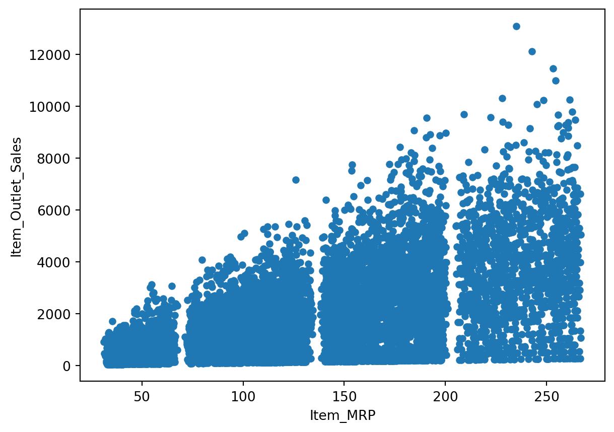

Anomaly detection is a process in data analysis and machine learning that involves identifying patterns, events, or data points that deviate significantly from the expected or normal behavior within a dataset. The goal is to identify anomalies or outliers that may indicate errors, fraud, security threats, or other unexpected events. Anomaly detection is used across various domains, including cybersecurity, finance, healthcare, industrial monitoring, and more.
What is an anomaly?
An anomaly, in the context of data analysis or system behavior, refers to an observation or event that deviates significantly from what is considered normal, expected, or typical. Anomalies are also often referred to as outliers, novelties, or deviations. Detecting anomalies is crucial in various fields, including data analysis, cybersecurity, finance, and industrial systems, as anomalies may indicate errors, fraud, security threats, or other unexpected events.
There are two main types of anomalies:
Point Anomalies: These anomalies involve individual data points that are considered unusual when compared to the rest of the data. For example, a sudden spike or drop in temperature, an unusually high transaction amount in financial data, or a single malfunctioning sensor reading in an industrial system.
Contextual Anomalies: These anomalies are identified by considering the context or relationships within the data. A data point may not be anomalous on its own, but it becomes an anomaly when taking into account its context. For instance, a sudden increase in website traffic during a holiday season might not be anomalous, but the same increase during an ordinary weekday could be considered unusual.
Common reasons for anomalies are:
data preprocessing errors;
noise;
fraud;
attacks.
Anomalies can be detected through various methods, including statistical techniques, machine learning algorithms, and rule-based systems. Some common approaches include:
Statistical Methods: Using statistical measures such as mean, standard deviation, or quantiles to identify data points that fall outside a certain threshold.
Machine Learning Algorithms: Employing supervised or unsupervised machine learning techniques, such as clustering, classification, or autoencoders, to learn patterns in the data and identify anomalies.
Rule-Based Systems: Defining explicit rules or thresholds based on domain knowledge to flag instances that deviate from the expected behavior.
Anomaly detection is crucial for maintaining the integrity and security of systems, as anomalies may indicate issues that require investigation or intervention. It’s an important aspect of data analysis, monitoring, and maintenance in various industries.
How does anomaly detection work?
There are several ways of training machine learning algorithms to detect anomalies. Supervised machine learning techniques are used when you have a labeled data set indicating normal vs. abnormal conditions. For example, a bank or credit card company can develop a process for labeling fraudulent credit card transactions after those transactions have been reported. Medical researchers might similarly label images or data sets indicative of future disease diagnosis. In such instances, supervised machine learning models can be trained to detect these known anomalies.
Researchers might start with some previously discovered outliers but suspect that other anomalies also exist. In the scenario of fraudulent credit card transactions, consumers might fail to report suspicious transactions with innocuous-sounding names and of a small value. A data scientist might use reports that include these types of fraudulent transactions to automatically label other like transactions as fraud, using semi-supervised machine learning techniques.
The supervised and semi-supervised techniques can only detect known anomalies. However, the vast majority of data is unlabeled. In these cases, data scientists might use unsupervised anomaly detection techniques, which can automatically identify exceptional or rare events.
For example, a cloud cost estimator might look for unusual upticks in data egress charges or processing costs that could be caused by a poorly written algorithm. Similarly, an intrusion detection algorithm might look for novel network traffic patterns or a rise in authentication requests. In both cases, unsupervised machine learning techniques might be used to identify data points indicating things that are well outside the range of normal behavior. In contrast, supervised techniques would have to be explicitly trained using examples of previously known deviant behavior.
Anomaly detection techniques
Many different kinds of machine learning algorithms can be trained to detect anomalies. Some of the most popular anomaly detection methods include the following:
Density-based algorithms determine when an outlier differs from a larger, hence denser normal data set, using algorithms like K-nearest neighbor and Isolation Forest.
Cluster-based algorithms evaluate how any point differs from clusters of related data using techniques like K-means cluster analysis.
Bayesian-network algorithms develop models for estimating the probability that events will occur based on related data and then identifying significant deviations from these predictions.
Neural network algorithms train a neural network to predict an expected time series and then flag deviations.
Implementation
Let’s implement anomaly detection in python using a dataset which contains sales data. First, we need to import the necessary libraries and view the data
import pandas as pdimport numpy as npimport matplotlib.pyplot as plt# Import modelsfrom pyod.models.abod import ABODfrom pyod.models.cblof import CBLOFfrom pyod.models.feature_bagging import FeatureBaggingfrom pyod.models.hbos import HBOSfrom pyod.models.iforest import IForestfrom pyod.models.knn import KNNfrom pyod.models.lof import LOF# reading the big mart sales training datadf = pd.read_csv("Train.csv")df.plot.scatter('Item_MRP','Item_Outlet_Sales')

from sklearn.preprocessing import MinMaxScalerscaler = MinMaxScaler(feature_range=(0, 1))df[['Item_MRP','Item_Outlet_Sales']] = scaler.fit_transform(df[['Item_MRP','Item_Outlet_Sales']])df[['Item_MRP','Item_Outlet_Sales']].head()
Item_MRP
Item_Outlet_Sales
0
0.927507
0.283587
1
0.072068
0.031419
2
0.468288
0.158115
3
0.640093
0.053555
4
0.095805
0.073651
The next bit of code defines a Python dictionary named classifiers that contains instances of various outlier detection algorithms from the scikit-learn library. Each key-value pair in the dictionary represents a different outlier detection algorithm. Hence, the following algorithms were employed for outlier detection:
---title: "Anomaly/Outlier Detection"author: "Daniel A. Udekwe"date: "2023-11-25"categories: [data, code, analysis]image: "anomaly.jpg"---Anomaly detection is a process in data analysis and machine learning that involves identifying patterns, events, or data points that deviate significantly from the expected or normal behavior within a dataset. The goal is to identify anomalies or outliers that may indicate errors, fraud, security threats, or other unexpected events. Anomaly detection is used across various domains, including cybersecurity, finance, healthcare, industrial monitoring, and more.**What is an anomaly?**An anomaly, in the context of data analysis or system behavior, refers to an observation or event that deviates significantly from what is considered normal, expected, or typical. Anomalies are also often referred to as outliers, novelties, or deviations. Detecting anomalies is crucial in various fields, including data analysis, cybersecurity, finance, and industrial systems, as anomalies may indicate errors, fraud, security threats, or other unexpected events.There are two main types of anomalies:1. **Point Anomalies:** These anomalies involve individual data points that are considered unusual when compared to the rest of the data. For example, a sudden spike or drop in temperature, an unusually high transaction amount in financial data, or a single malfunctioning sensor reading in an industrial system.2. **Contextual Anomalies:** These anomalies are identified by considering the context or relationships within the data. A data point may not be anomalous on its own, but it becomes an anomaly when taking into account its context. For instance, a sudden increase in website traffic during a holiday season might not be anomalous, but the same increase during an ordinary weekday could be considered unusual.Common reasons for anomalies are:- data preprocessing errors;- noise;- fraud;- attacks.Anomalies can be detected through various methods, including statistical techniques, machine learning algorithms, and rule-based systems. Some common approaches include:- **Statistical Methods:** Using statistical measures such as mean, standard deviation, or quantiles to identify data points that fall outside a certain threshold.- **Machine Learning Algorithms:** Employing supervised or unsupervised machine learning techniques, such as clustering, classification, or autoencoders, to learn patterns in the data and identify anomalies.- **Rule-Based Systems:** Defining explicit rules or thresholds based on domain knowledge to flag instances that deviate from the expected behavior.Anomaly detection is crucial for maintaining the integrity and security of systems, as anomalies may indicate issues that require investigation or intervention. It's an important aspect of data analysis, monitoring, and maintenance in various industries.## How does anomaly detection work?There are several ways of training machine learning algorithms to detect anomalies. Supervised machine learning techniques are used when you have a labeled data set indicating normal vs. abnormal conditions. For example, a bank or credit card company can develop a process for labeling fraudulent credit card transactions after those transactions have been reported. Medical researchers might similarly label images or data sets indicative of future disease diagnosis. In such instances, supervised machine learning models can be trained to detect these known anomalies.Researchers might start with some previously discovered outliers but suspect that other anomalies also exist. In the scenario of fraudulent credit card transactions, consumers might fail to report suspicious transactions with innocuous-sounding names and of a small value. A data scientist might use reports that include these types of fraudulent transactions to automatically label other like transactions as fraud, using semi-supervised machine learning techniques.The supervised and semi-supervised techniques can only detect known anomalies. However, the vast majority of data is unlabeled. In these cases, data scientists might use unsupervised anomaly detection techniques, which can automatically identify exceptional or rare events.For example, a cloud cost estimator might look for unusual upticks in data egress charges or processing costs that could be caused by a poorly written algorithm. Similarly, an intrusion detection algorithm might look for novel network traffic patterns or a rise in authentication requests. In both cases, unsupervised machine learning techniques might be used to identify data points indicating things that are well outside the range of normal behavior. In contrast, supervised techniques would have to be explicitly trained using examples of previously known deviant behavior.## **Anomaly detection techniques**Many different kinds of machine learning algorithms can be trained to detect anomalies. Some of the most popular anomaly detection methods include the following:- Density-based algorithms determine when an outlier differs from a larger, hence denser normal data set, using algorithms like K-nearest neighbor and Isolation Forest.- Cluster-based algorithms evaluate how any point differs from clusters of related data using techniques like K-means cluster analysis.- Bayesian-network algorithms develop models for estimating the probability that events will occur based on related data and then identifying significant deviations from these predictions.- Neural network algorithms train a neural network to predict an expected time series and then flag deviations.## ImplementationLet's implement anomaly detection in python using a dataset which contains sales data. First, we need to import the necessary libraries and view the data```{python}import pandas as pdimport numpy as npimport matplotlib.pyplot as plt# Import modelsfrom pyod.models.abod import ABODfrom pyod.models.cblof import CBLOFfrom pyod.models.feature_bagging import FeatureBaggingfrom pyod.models.hbos import HBOSfrom pyod.models.iforest import IForestfrom pyod.models.knn import KNNfrom pyod.models.lof import LOF# reading the big mart sales training datadf = pd.read_csv("Train.csv")df.plot.scatter('Item_MRP','Item_Outlet_Sales')``````{python}from sklearn.preprocessing import MinMaxScalerscaler = MinMaxScaler(feature_range=(0, 1))df[['Item_MRP','Item_Outlet_Sales']] = scaler.fit_transform(df[['Item_MRP','Item_Outlet_Sales']])df[['Item_MRP','Item_Outlet_Sales']].head()```The next bit of code defines a Python dictionary named *classifiers* that contains instances of various outlier detection algorithms from the scikit-learn library. Each key-value pair in the dictionary represents a different outlier detection algorithm. Hence, the following algorithms were employed for outlier detection:- Angle based Outlier Detector (ABOD)- Cluster based Local Outlier Factor (CBLOF)- Feature Bagging- Histogram-based Outlier Detection (HBOS)- Isolation Forest- K Nearest Neighbors (KNN)- Average KNN\```{python}import pandas as pdimport numpy as npimport matplotlib.pyplot as pltfrom sklearn.preprocessing import StandardScalerfrom sklearn.model_selection import train_test_splitfrom sklearn.metrics import classification_reportfrom sklearn.ensemble import IsolationForestfrom sklearn.neighbors import LocalOutlierFactorfrom sklearn.svm import OneClassSVMfrom pyod.models.abod import ABODfrom pyod.models.cblof import CBLOFfrom pyod.models.feature_bagging import FeatureBaggingfrom pyod.models.hbos import HBOSfrom pyod.models.knn import KNNimport warningswarnings.filterwarnings("ignore")# Load the datasetdf = pd.read_csv('train.csv')# Select relevant features for outlier detectionfeatures = ['Item_MRP', 'Item_Outlet_Sales']X = df[features].values# Standardize the featuresscaler = StandardScaler()X = scaler.fit_transform(X)# Set up the outlier detection algorithmsrandom_state = np.random.RandomState(42)outliers_fraction =0.05# Split the data into training and testing setsX_train, X_test = train_test_split(X, test_size=0.2, random_state=42)# Angle-based Outlier Detector (ABOD)clf_abod = ABOD(contamination=outliers_fraction)plt.figure(figsize=(8, 6))clf_abod.fit(X_train)y_train_pred_abod = clf_abod.labels_y_test_pred_abod = clf_abod.predict(X_test)print("------ Angle-based Outlier Detector (ABOD) ------")print(f"Train Accuracy: {np.sum(y_train_pred_abod ==0) /len(y_train_pred_abod):.2%}")print(f"Test Accuracy: {np.sum(y_test_pred_abod ==0) /len(y_test_pred_abod):.2%}")print("\nClassification Report:")print(classification_report(y_test_pred_abod, np.zeros_like(y_test_pred_abod), zero_division=1))inliers_train_abod = X_train[y_train_pred_abod ==0]outliers_train_abod = X_train[y_train_pred_abod ==1]inliers_test_abod = X_test[y_test_pred_abod ==0]outliers_test_abod = X_test[y_test_pred_abod ==1]plt.scatter(inliers_train_abod[:, 0], inliers_train_abod[:, 1], color='blue', label='Inliers (Train)')plt.scatter(outliers_train_abod[:, 0], outliers_train_abod[:, 1], color='red', label='Outliers (Train)')plt.scatter(inliers_test_abod[:, 0], inliers_test_abod[:, 1], color='green', label='Inliers (Test)')plt.scatter(outliers_test_abod[:, 0], outliers_test_abod[:, 1], color='orange', label='Outliers (Test)')plt.title("Angle-based Outlier Detector (ABOD)")plt.legend()plt.show()``````{python}# Cluster-based Local Outlier Factor (CBLOF)clf_cblof = CBLOF(contamination=outliers_fraction, check_estimator=False, random_state=random_state)plt.figure(figsize=(8, 6))clf_cblof.fit(X_train)y_train_pred_cblof = clf_cblof.labels_y_test_pred_cblof = clf_cblof.predict(X_test)print("------ Cluster-based Local Outlier Factor (CBLOF) ------")print(f"Train Accuracy: {np.sum(y_train_pred_cblof ==0) /len(y_train_pred_cblof):.2%}")print(f"Test Accuracy: {np.sum(y_test_pred_cblof ==0) /len(y_test_pred_cblof):.2%}")print("\nClassification Report:")print(classification_report(y_test_pred_cblof, np.zeros_like(y_test_pred_cblof), zero_division=1))inliers_train_cblof = X_train[y_train_pred_cblof ==0]outliers_train_cblof = X_train[y_train_pred_cblof ==1]inliers_test_cblof = X_test[y_test_pred_cblof ==0]outliers_test_cblof = X_test[y_test_pred_cblof ==1]plt.scatter(inliers_train_cblof[:, 0], inliers_train_cblof[:, 1], color='blue', label='Inliers (Train)')plt.scatter(outliers_train_cblof[:, 0], outliers_train_cblof[:, 1], color='red', label='Outliers (Train)')plt.scatter(inliers_test_cblof[:, 0], inliers_test_cblof[:, 1], color='green', label='Inliers (Test)')plt.scatter(outliers_test_cblof[:, 0], outliers_test_cblof[:, 1], color='orange', label='Outliers (Test)')plt.title("Cluster-based Local Outlier Factor (CBLOF)")plt.legend()plt.show()``````{python}# Feature Baggingclf_feature_bagging = FeatureBagging(KNN(n_neighbors=35), contamination=outliers_fraction, check_estimator=False, random_state=random_state)plt.figure(figsize=(8, 6))clf_feature_bagging.fit(X_train)y_train_pred_feature_bagging = clf_feature_bagging.labels_y_test_pred_feature_bagging = clf_feature_bagging.predict(X_test)print("------ Feature Bagging ------")print(f"Train Accuracy: {np.sum(y_train_pred_feature_bagging ==0) /len(y_train_pred_feature_bagging):.2%}")print(f"Test Accuracy: {np.sum(y_test_pred_feature_bagging ==0) /len(y_test_pred_feature_bagging):.2%}")print("\nClassification Report:")print(classification_report(y_test_pred_feature_bagging, np.zeros_like(y_test_pred_feature_bagging), zero_division=1))inliers_train_feature_bagging = X_train[y_train_pred_feature_bagging ==0]outliers_train_feature_bagging = X_train[y_train_pred_feature_bagging ==1]inliers_test_feature_bagging = X_test[y_test_pred_feature_bagging ==0]outliers_test_feature_bagging = X_test[y_test_pred_feature_bagging ==1]plt.scatter(inliers_train_feature_bagging[:, 0], inliers_train_feature_bagging[:, 1], color='blue', label='Inliers (Train)')plt.scatter(outliers_train_feature_bagging[:, 0], outliers_train_feature_bagging[:, 1], color='red', label='Outliers (Train)')plt.scatter(inliers_test_feature_bagging[:, 0], inliers_test_feature_bagging[:, 1], color='green', label='Inliers (Test)')plt.scatter(outliers_test_feature_bagging[:, 0], outliers_test_feature_bagging[:, 1], color='orange', label='Outliers (Test)')plt.title("Feature Bagging")plt.legend()plt.show()``````{python}# Histogram-based Outlier Detection (HBOS)clf_hbos = HBOS(contamination=outliers_fraction)plt.figure(figsize=(8, 6))clf_hbos.fit(X_train)y_train_pred_hbos = clf_hbos.labels_y_test_pred_hbos = clf_hbos.predict(X_test)print("------ Histogram-based Outlier Detection (HBOS) ------")print(f"Train Accuracy: {np.sum(y_train_pred_hbos ==0) /len(y_train_pred_hbos):.2%}")print(f"Test Accuracy: {np.sum(y_test_pred_hbos ==0) /len(y_test_pred_hbos):.2%}")print("\nClassification Report:")print(classification_report(y_test_pred_hbos, np.zeros_like(y_test_pred_hbos), zero_division=1))inliers_train_hbos = X_train[y_train_pred_hbos ==0]outliers_train_hbos = X_train[y_train_pred_hbos ==1]inliers_test_hbos = X_test[y_test_pred_hbos ==0]outliers_test_hbos = X_test[y_test_pred_hbos ==1]plt.scatter(inliers_train_hbos[:, 0], inliers_train_hbos[:, 1], color='blue', label='Inliers (Train)')plt.scatter(outliers_train_hbos[:, 0], outliers_train_hbos[:, 1], color='red', label='Outliers (Train)')plt.scatter(inliers_test_hbos[:, 0], inliers_test_hbos[:, 1], color='green', label='Inliers (Test)')plt.scatter(outliers_test_hbos[:, 0], outliers_test_hbos[:, 1], color='orange', label='Outliers (Test)')plt.title("Histogram-based Outlier Detection (HBOS)")plt.legend()plt.show()``````{python}# Isolation Forestclf_isolation_forest = IsolationForest(contamination=outliers_fraction, random_state=random_state)plt.figure(figsize=(8, 6))clf_isolation_forest.fit(X_train)y_train_scores_if = clf_isolation_forest.decision_function(X_train)y_test_scores_if = clf_isolation_forest.decision_function(X_test)threshold_if = np.percentile(y_train_scores_if, 100* outliers_fraction)y_train_pred_if = (y_train_scores_if > threshold_if).astype(int)y_test_pred_if = (y_test_scores_if > threshold_if).astype(int)print("------ Isolation Forest ------")print(f"Train Accuracy: {np.sum(y_train_pred_if ==0) /len(y_train_pred_if):.2%}")print(f"Test Accuracy: {np.sum(y_test_pred_if ==0) /len(y_test_pred_if):.2%}")print("\nClassification Report:")print(classification_report(y_test_pred_if, np.zeros_like(y_test_pred_if), zero_division=1))inliers_train_if = X_train[y_train_pred_if ==0]outliers_train_if = X_train[y_train_pred_if ==1]inliers_test_if = X_test[y_test_pred_if ==0]outliers_test_if = X_test[y_test_pred_if ==1]plt.scatter(inliers_train_if[:, 0], inliers_train_if[:, 1], color='blue', label='Inliers (Train)')plt.scatter(outliers_train_if[:, 0], outliers_train_if[:, 1], color='red', label='Outliers (Train)')plt.scatter(inliers_test_if[:, 0], inliers_test_if[:, 1], color='green', label='Inliers (Test)')plt.scatter(outliers_test_if[:, 0], outliers_test_if[:, 1], color='orange', label='Outliers (Test)')plt.title("Isolation Forest")plt.legend()plt.show()``````{python}# K Nearest Neighbors (KNN)clf_knn = KNN(contamination=outliers_fraction)plt.figure(figsize=(8, 6))clf_knn.fit(X_train)y_train_pred_knn = clf_knn.labels_y_test_pred_knn = clf_knn.predict(X_test)print("------ K Nearest Neighbors (KNN) ------")print(f"Train Accuracy: {np.sum(y_train_pred_knn ==0) /len(y_train_pred_knn):.2%}")print(f"Test Accuracy: {np.sum(y_test_pred_knn ==0) /len(y_test_pred_knn):.2%}")print("\nClassification Report:")print(classification_report(y_test_pred_knn, np.zeros_like(y_test_pred_knn), zero_division=1))inliers_train_knn = X_train[y_train_pred_knn ==0]outliers_train_knn = X_train[y_train_pred_knn ==1]inliers_test_knn = X_test[y_test_pred_knn ==0]outliers_test_knn = X_test[y_test_pred_knn ==1]plt.scatter(inliers_train_knn[:, 0], inliers_train_knn[:, 1], color='blue', label='Inliers (Train)')plt.scatter(outliers_train_knn[:, 0], outliers_train_knn[:, 1], color='red', label='Outliers (Train)')plt.scatter(inliers_test_knn[:, 0], inliers_test_knn[:, 1], color='green', label='Inliers (Test)')plt.scatter(outliers_test_knn[:, 0], outliers_test_knn[:, 1], color='orange', label='Outliers (Test)')plt.title("K Nearest Neighbors (KNN)")plt.legend()plt.show()``````{python}# Average KNNclf_avg_knn = KNN(method='mean', contamination=outliers_fraction)plt.figure(figsize=(8, 6))clf_avg_knn.fit(X_train)y_train_pred_avg_knn = clf_avg_knn.labels_y_test_pred_avg_knn = clf_avg_knn.predict(X_test)print("------ Average KNN ------")print(f"Train Accuracy: {np.sum(y_train_pred_avg_knn ==0) /len(y_train_pred_avg_knn):.2%}")print(f"Test Accuracy: {np.sum(y_test_pred_avg_knn ==0) /len(y_test_pred_avg_knn):.2%}")print("\nClassification Report:")print(classification_report(y_test_pred_avg_knn, np.zeros_like(y_test_pred_avg_knn), zero_division=1))inliers_train_avg_knn = X_train[y_train_pred_avg_knn ==0]outliers_train_avg_knn = X_train[y_train_pred_avg_knn ==1]inliers_test_avg_knn = X_test[y_test_pred_avg_knn ==0]outliers_test_avg_knn = X_test[y_test_pred_avg_knn ==1]plt.scatter(inliers_train_avg_knn[:, 0], inliers_train_avg_knn[:, 1], color='blue', label='Inliers (Train)')plt.scatter(outliers_train_avg_knn[:, 0], outliers_train_avg_knn[:, 1], color='red', label='Outliers (Train)')plt.scatter(inliers_test_avg_knn[:, 0], inliers_test_avg_knn[:, 1], color='green', label='Inliers (Test)')plt.scatter(outliers_test_avg_knn[:, 0], outliers_test_avg_knn[:, 1], color='orange', label='Outliers (Test)')plt.title("Average KNN")plt.legend()plt.show()```